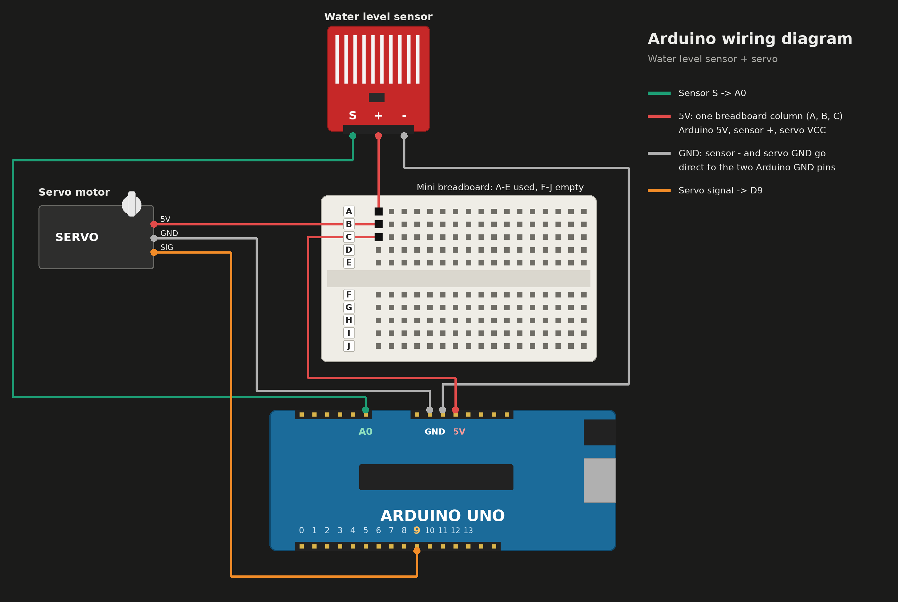

An invention for three-wheeled e-bikes: a water sensor and Arduino that wipe the windshield automatically.
Institute of Education, Arts, and Sciences · Angeles City, Pampanga
Why a rain-sensing wiper, and what we built.
Automotive technology keeps improving driver safety and comfort. A rain-sensing wiper wipes the windshield on its own when it detects water, so the driver no longer needs the wiper switch.
Manual wipers demand constant attention, especially in sudden rain or heavy traffic. In three-wheeled e-bikes the wiper button sits at the front of the windshield, not on the handlebar.
Rainwater reduces visibility of road signs, pedestrians and other vehicles. Less manual adjusting lets the rider focus on the road.
A water sensor feeds an Arduino Uno, which drives a servo motor that acts as the wiper. Built on a breadboard and powered by a power bank through the Arduino’s USB port.
Real rain sensors send infrared light and watch how it reflects off the glass. Raindrops change the reflection, which becomes an electrical signal. The system still cannot replace an alert driver, and it depends on correct installation and a clean windshield.
What this invention aims to answer.
…in detecting the presence of water and automatically activating the windshield wiper system.
…specifically the safety of an e-bike driver.
Replace the manual wiper with an automatic rain-detecting one.
An automatic wiper using a water sensor and Arduino board that detects rain and operates the wiper motor.
Remove rainwater automatically, improve visibility, and minimize manual operation in the rain.
Rain detection, response time, wiping efficiency, reliability and ease of use.
Who benefits and why it matters.
Easier wiper control and more focus on driving.
An alternative way to get an automatic windshield wiper.
Ideas for inexpensive and useful automotive technology.
Hands-on knowledge of Arduino, rain sensors and automation.
A reference for their own projects.
A low-cost Arduino build that makes driving easier by automating one repetitive task.
Studies and sources that support the prototype.
Akanni et al.
Built an Arduino Uno wiper prototype that turns on the wiper motor when the rain sensor detects moisture.
Reddy et al.
Poor visibility in heavy rain contributes to accidents. The wiper also stops when the glass is dry, preventing dry wiping that damages blades.
HELLA
Explains how rain sensors give comfort and safety, and how a motor-driven arm sweeps water off the glass.
Kong et al.
Good mechanical design, rigidity, wiping performance and low noise matter for reliable wiper operation.
Graham et al.
Effectiveness depends on the mechanical performance of the blade too: proper contact and smooth movement.
SAE International
Testing covers activation time, blade movement, water cleared and reliability over cycles. We borrow these principles to judge our prototype.
Also: Kharche et al. (2022), Alazzawi et al. (2015) and Jain et al. (2026) show that manually managing wipers is difficult in fast traffic and that wrong wiper speed has played a role in accidents.
What we used and how we built and tested it.
Gather all components and tools.
Connect sensor, servo and Arduino through the breadboard.
Upload code that reacts to the sensor signal.
Connect to laptop and check the code runs.
Apply water to the sensor.
Check that the servo moves when water is sensed.
Fix connections and improve performance.
Labeled layout, major parts and what makes it unique.

| Part | Function | Material |
|---|---|---|
| Arduino Uno | Reads the sensor, runs the program, controls the servo | PCB with microcontroller |
| Water level sensor | Detects water and sends an analog signal to A0 | PCB with exposed copper traces |
| Servo motor | Rotates the wiper arm on command from D9 | Plastic casing, gears, DC motor |
| Breadboard | Shares 5V and GND with sensor and servo | Plastic with metal contacts |
| Power bank | Supplies 5V so no computer is needed | Lithium cell in plastic case |
The physics ideas that make the water-sensing prototype work.
How the prototype works, what each part does, and the Arduino program.
A power bank powers the Arduino. Plug the Arduino’s USB port into the power bank with a USB cable.
The water level sensor detects water and sends a signal to the Arduino.
The Arduino Uno processes the information based on the programmed instructions.
The Arduino sends a control signal to the servo motor through digital pin D9.
The servo motor rotates and moves the connected mechanism.
Acts as the brain or controller of the prototype. It receives sensor readings, processes the programmed instructions, and controls the servo motor.
Detects water and sends electrical signals to the Arduino.
Receives control signals from the Arduino and produces rotational movement.
Supplies 5V power. Connected by USB cable to the Arduino so the prototype runs without a computer.
Joins the 5V line so the sensor and servo share one power source without soldering.
#include <Servo.h> const int SENSOR_PIN = A0; const int SERVO_PIN = 9; const int WET_THRESHOLD = 100; const int DRY_COUNT = 2; const int STOP_VAL = 90; const int SPEED = 40; const int WIPE_TIME = 900; const int BACK_TRIM = 10; const int SETTLE_TIME = 50; Servo wiper; bool wiping = false; int dryChecks = 0; int readSensor() { long sum = 0; for (int i = 0; i < 8; i++) { sum += analogRead(SENSOR_PIN); delay(2); } return sum / 8; } void wipeOnce() { wiper.write(STOP_VAL + SPEED); delay(WIPE_TIME); wiper.write(STOP_VAL); delay(SETTLE_TIME); wiper.write(STOP_VAL - SPEED); delay(WIPE_TIME + BACK_TRIM); wiper.write(STOP_VAL); delay(SETTLE_TIME); } void setup() { Serial.begin(9600); Serial.println("Started. Watch the readings below."); } void loop() { int v = readSensor(); bool wet = (v > WET_THRESHOLD); Serial.print("Reading: "); Serial.print(v); Serial.print(" Threshold: "); Serial.print(WET_THRESHOLD); Serial.print(" Wet: "); Serial.print(wet ? "YES" : "NO"); Serial.print(" Wiping: "); Serial.println(wiping ? "YES" : "NO"); if (!wiping) { if (wet) { wiper.attach(SERVO_PIN); wiping = true; dryChecks = 0; } else { delay(100); return; } } wipeOnce(); if (readSensor() > WET_THRESHOLD) { dryChecks = 0; } else { dryChecks++; if (dryChecks >= DRY_COUNT) { wiper.write(STOP_VAL); wiper.detach(); wiping = false; dryChecks = 0; } } }
Connect the Arduino Uno’s USB port to the power bank with a USB cable. The Arduino then powers the sensor and servo from its 5V and GND pins through the breadboard. The Arduino does not need a computer once the program is uploaded.
Four trials of the Automotive Rain Sensor Wiper.
We assembled the rain sensor, servo motor, jumper wires and breadboard, then connected the Arduino to a laptop to check that the code was read, the sensor responded and the servo moved. We ran 4 trials.
Tested the wiper using the available materials. It works and the laptop reads the code.
Adjusted and checked wiring because we had no female jumper wire. Connection difficulties; the rain sensor was not working.
Tested with male-to-male jumper wires and checked if the code could be read. The system worked and the laptop read the code.
Tested the fixed system and observed the servo movement. The servo moved, but 360° instead of only 180°.
The prototype operated with the available materials and the servo moves once water is detected. It did not yet produce a proper windshield wiping motion at the time of testing, so it needed improvement.
What went wrong and what we did about it.
Only male jumper wires were bought, so connecting the sensor was hard.
Used male-to-male jumpers as a temporary alternative.
Powered by a power bank instead of the laptop.
The laptop failed to read the program code in one trial.
Re-checked connections and re-tested the code. The laptop then read it and the servo moved.
Sensor readings averaged; wiper stops after the sensor reads dry.
The servo moved in a full circle instead of a wiping sweep.
Revised the program.
Forward, stop, reverse wiping cycle.
Did it achieve its purpose?
objectives addressed
trials conducted
build and test steps
We built an Automotive Rain Sensor Wiper using an Arduino Uno, water sensor, and servo motor. The system detected water and moved the servo, but the motion was circular instead of back and forth, and we had jumper wire and code problems.
Research articles, technical references and websites.